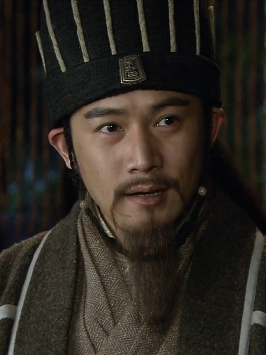
ژوگه لیانگ با نام محترم کنگ مینگ
نابغهای استراتژیست و صدراعظم شو هان که با هوش سرشار و پیشبینیهای دقیقش، نقشههای جنگی بینظیری طراحی کرد. او نماد وفاداری مطلق به لیو بی و تلاش بیوقفه برای احیای خاندان هان بود. با تدبیرش، ارتش کوچک شو را در برابر امپراتوری عظیم وی نگه داشت و به اسطورهای در تاریخ چین تبدیل شد. حکمت او هنوز هم در فرهنگ عامه زبانزد است.
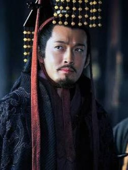
سون کوآن با نام محترم ژونگمو
فرمانروای وو که با تدبیر و صبر، امپراتوری خود را در جنوب شرقی مستحکم کرد. او برخلاف رقیبانش، بیشتر به توسعهٔ داخلی و دریایی پرداخت و از مشاوران بزرگی مثل ژو یو و لو شون بهره برد. سیاستهای متعادل او باعث شد وو به عنوان آخرین امپراتوری از سهگانه سقوط کند. او نشان داد که دوراندیشی و میانهروی میتواند از شمشیر هم قدرتمندتر باشد.
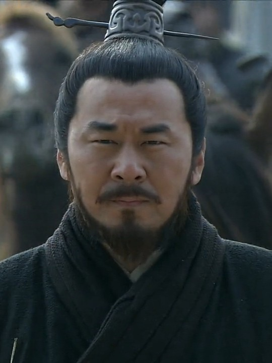
سائو سائو با نام محترم منگده
استراتژیست و فرمانروایی بیرحم که با ذهنی تیزبین و قدرت مدیریتی بالا، پایههای امپراتوری وی را بنا نهاد. او شاعری توانا و سیاستمداری عملگرا بود که در عین ظلم و جاهطلبی، به نخبگان احترام میگذاشت. کارنامهاش آمیزهای از پیروزیهای درخشان و شکستهای مهلک، مثل نبرد صخرهی سرخ، است. او همواره به دنبال یکپارچهسازی چین تحت فرمان خود بود.
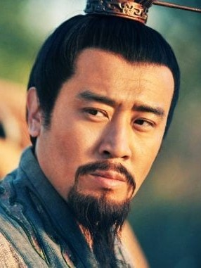
لیو بی با نام محترم ژوآنده
بنیانگذار شو هان که با فروتنی و مهربانی، دلهای مردم و جنگجویان را تسخیر کرد. او از تبار فقیر خاندان هان بود و با تکیه بر برادران قسمخورده و راهنماییهای کونگ مینگ، امپراتوری خود را ساخت. وفاداریاش به آرمان هان و عشق به رعایا، او را به محبوبترین فرمانروای سه پادشاهی تبدیل کرد. او اعتقاد داشت که حاکم باید در خدمت مردم باشد، نه برعکس.
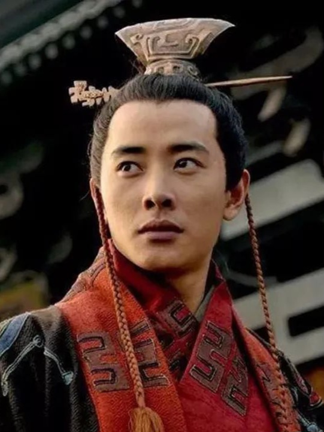
امپراتور (شیاندی از خاندان هان)
آخرین امپراتور سلسلهٔ هان که در دوران کودکی بر تخت نشست و تمام عمرش زیر سایهٔ قدرتمندان بود. او نماد فروپاشی یک سلسلهٔ کهن و آغاز عصر هرجومرج بود. با وجود ضعف سیاسی، نام او همچنان مشروعیت بخشیدن به حکومتها را ممکن میساخت. سرنوشت او نمایشگر پایان شکوهمندترین دورهٔ تاریخ چین است.
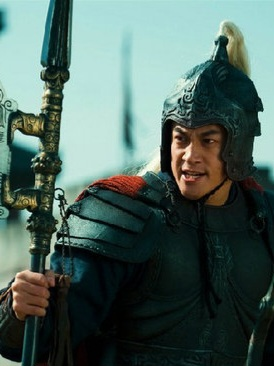
لو بو با نام محترم فنگ شیان
قویترین جنگجوی دوران که با نیزهاش، هیچکس در میدان نبرد تاب مقاومت نداشت. او شهرت بینظیری داشت اما به خاطر خیانتهای پیاپی و بیوفایی، لقب «مارمولکِ تغییردهنده» گرفت. قدرت رزمی او افسانهای بود، ولی نبود اخلاق و وفاداری، سرانجامش را به شکست و مرگ کشاند. او هشداردهندهٔ این است که قدرتِ بیاخلاق، پایدار نیست.
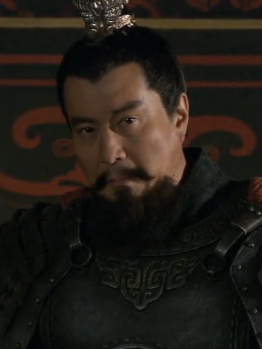
یوان شائو با نام محترم بن چو
ارباب بزرگ شمال که از خاندانی اصیل و نیرومند برخاسته و زمانی قدرتمندترین فرمانروای چین بود. او با تکیه بر نسب و سپاه انبوهش، خود را شایستهٔ تاجوتخت میدانست، اما در تصمیمگیریها مردد و متکبر بود. شکست تحقیرآمیز او در نبرد گواندو برابر تسائو تسائو، یکی از درسهای بزرگ تاریخ است. غرور و کارشکنیِ مشاورانش، امپراتوریاش را نابود کرد.
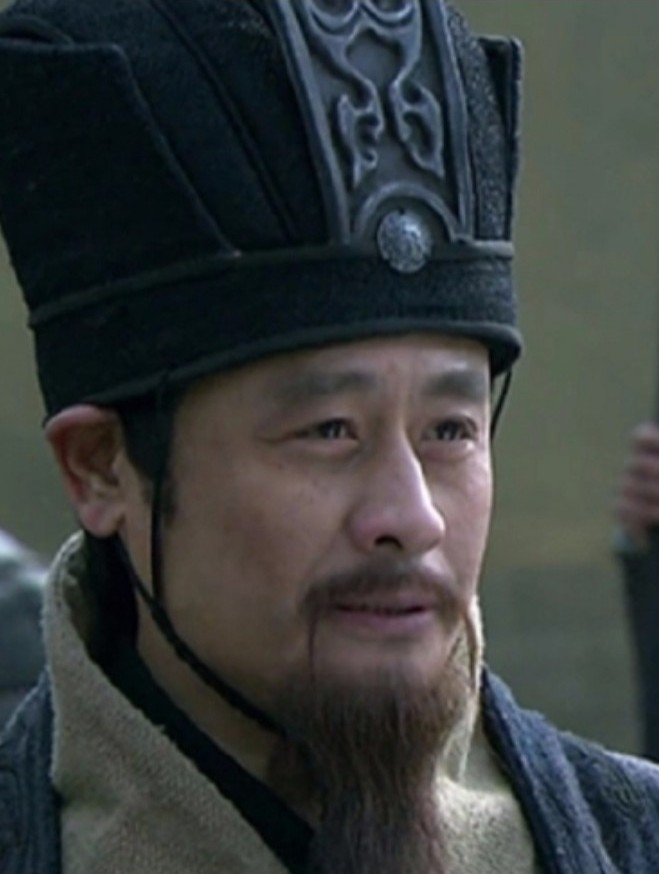
ژون یو با نام محترم رو یو
مشاور برجستهٔ سائو سائو که با بینش نافذ و برنامهریزی دقیق، نقشی کلیدی در پیروزیهای اولیهٔ وی ایفا کرد. او به خاطر پیشبینیهای هوشمندانهاش در جنگ گواندو معروف است و تسائو تسائو او را «پشتپناه خود» میدانست. در سیاست و استراتژی، نبوغی کمنظیر داشت و همچون سایهای خردمند در پسپردهٔ قدرت حرکت میکرد. مرگ زودهنگامش، ضایعهای بزرگ برای امپراتوری وی بود.
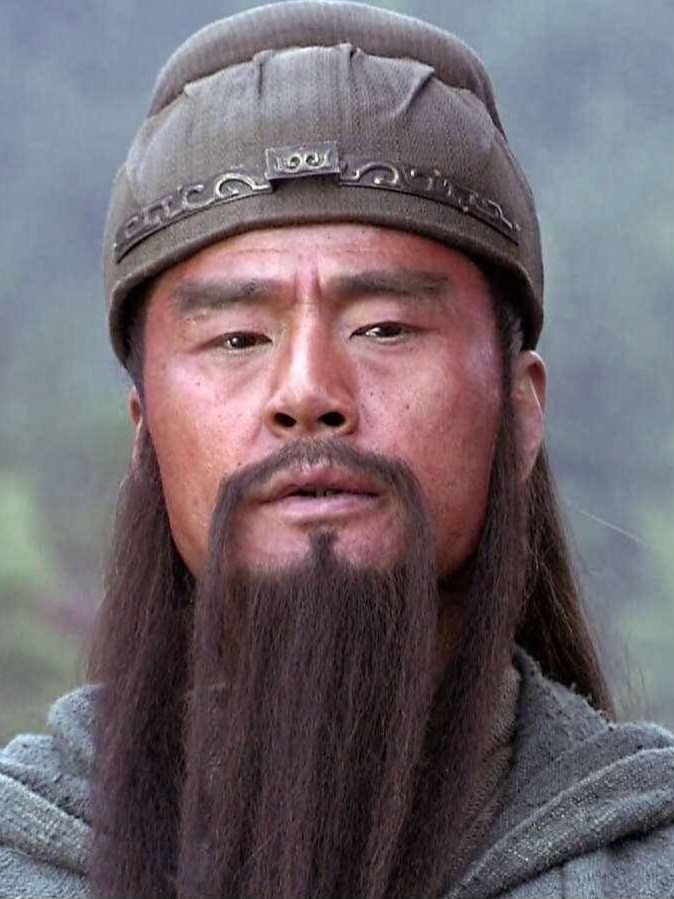
گوان یو با نام محترم یون چانگ
جنگجوی افسانهای با ریش بلند و چهرهای سرخرنگ که با نیزهی اژدهاکش، دشمنان را به هراس میانداخت. او برادر قسمخوردهی لیو بی بود و به خاطر وفاداری و جوانمردی بینظیرش شهرت داشت. پس از مرگ، به مقام خدای جنگ در فرهنگ چینی رسید و نماد شرافت و یکرنگی شد. وفاداریاش تا حدی بود که حتی در برابر پیشنهادهای وسوسهانگیز تسائو تسائو، دست از برادرش نکشید.
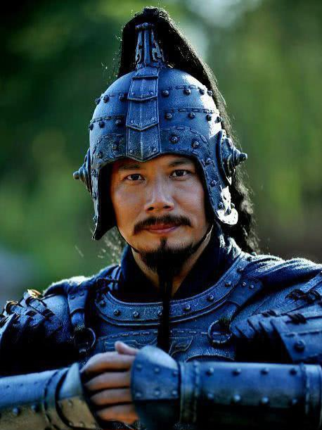
سائو رن با نام محترم زی شیا
پسرعمو و یکی از بهترین فرماندهان سائو سائو که در دفاع از شهرها و نواحی مرزی مهارت فوقالعادهای داشت. او همواره در خطمقدم نبردها حاضر میشد و با شجاعت و پایداریاش، جانسپردگان وی را شگفتزده میکرد. اگرچه در تاریخ کمتر از دیگران از او نام برده شده، اما نقشی حیاتی در تحکیم پایههای امپراتوری وی داشت. او نمونهٔ یک سرباز وفادار و بیادعا بود.
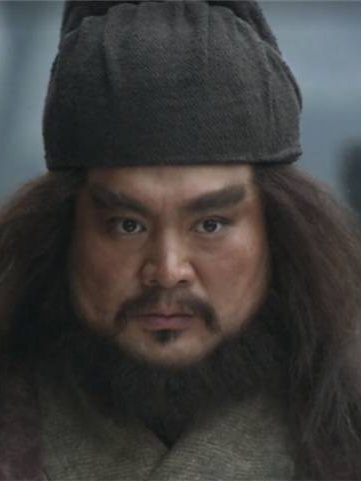
ژانگ فی با نام محترم یی ده
جنگجوی تنومند و تندخو که با فریادهای مهیبش، دشمنان را میترساند و با نیزهی پلنگکشش، شهرهٔ میدانهای نبرد بود. او سومین برادر قسمخوردهٔ لیو بی بود و علیرغم خلقوخوی تند، وفاداریاش به برادران بینظیر بود. در نبردها بیش از هر کسی شجاعت داشت، اما رفتار خشنش سرانجام به دست افراد خودی به قیمت جانش تمام شد. او نشان داد که شجاعت بدون خرد، خطرناک است.
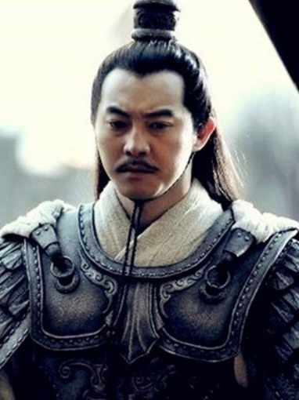
سون سه با نام محترم بو فو
پسر بزرگ سون جیان و برادر بزرگتر سون کوان که با شجاعت و جوانی، پایههای امپراتوری وو را در جنوب ریخت. او ملقب به «پادشاه کوچک» بود و در مدت کوتاهی، سرزمینهای وسیعی را فتح کرد. با تدبیر و جنگاوریاش، قلمرو وو را از یک منطقهٔ کوچک به یک قدرت بزرگ تبدیل نمود. مرگ زودهنگامش در اوج جوانی، ضایعهای بزرگ برای خاندان سون بود.
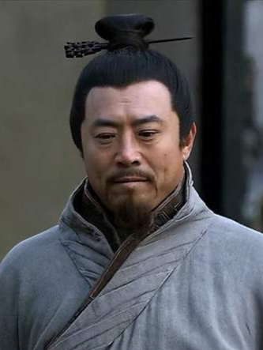
شویو با نام محترم یوان هاو
مشاور یوان شائو که بعداً به صف سائو سائو پیوست و نقش کلیدی در پیروزی گواندو ایفا کرد. او که از غرور و بیکفایتی یوان شائو به تنگ آمده بود، نقشههای حیاتی دشمن را برای تسائو تسائو فاش کرد. هرچند در تاریخ بهعنوان یک خائن شناخته میشود، اما انتخاب او بر اساس عقلانیت و واقعبینی بود. سرنوشت او نشان میدهد که گاهی خیانت به یک ارباب نالایق، هوشمندانهترین تصمیم است.
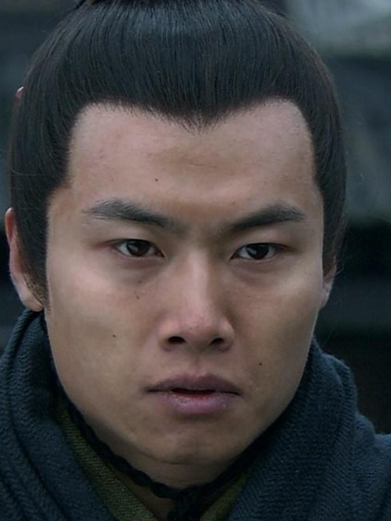
سائو پی با نام محترم زی هوان
پسر سائو سائو و نخستین امپراتور سلسلهی وی که پس از مرگ پدر، امپراتوری را رسماً اعلام کرد. او شاعری خوشذوق و ادیبی توانا بود و به ادبیات علاقهای وافر داشت، ولی در سیاست و جنگاوری به پای پدر نمیرسید. با وجود هوش سرشار، تصمیماتش گاهی تحت تأثیر حسادت و کوچکبینی بود. او با پایان دادن به سلسلهٔ هان، پرده از عصری جدید در تاریخ چین برداشت.
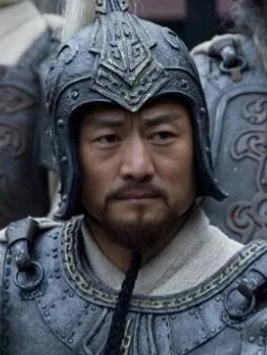
سون جیان با نام محترم ون تای
جنگجوی بزرگ و بنیانگذار قدرت خاندان سون در جنوب که در دل جنگهای پایانی هان، لقب «پلنگِ جیانگدونگ» را گرفت. او با شجاعت و جسارت بینظیر، هراس را در دل دشمنان میانداخت و در نبردهای بسیاری پیروز شد. مرگ او در نبرد و پس از یک تیراندازی، نقطهعطفی برای فرزندانش شد تا راه او را ادامه دهند. او پایهگذاری سلسلهای بود که فرزندانش به شکوفایی رساندند.
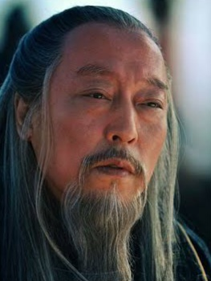
سیما یی با نام محترم ژونگ دا
استراتژیست زیرک و بیرحمی که با صبری افسانهای و دسیسههای دقیق، درنهایت قدرت را از خاندان تسائو ربود. او رقیب اصلی ژوگه لیانگ بود و در نبردهای بیشمار، او را با حیله و صبر شکست داد. با وجود وفاداری ظاهری، برنامهای طولانیمدت برای تسخیر قدرت داشت که به تأسیس سلسلهی جین انجامید. او نماد سیاستمداری است که با حوصله، بزرگترین امپراتوری را تصاحب کرد.
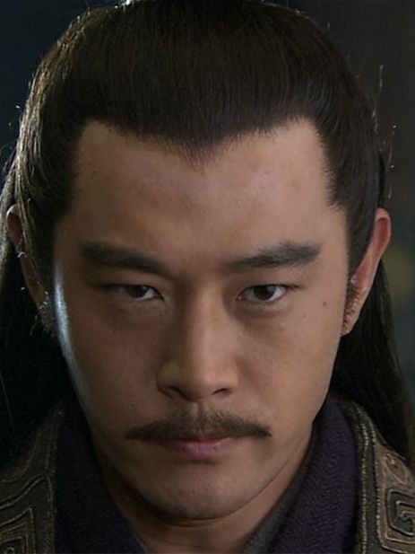
ژو یو با نام محترم گونگ جین
فرماندهٔ نیروی دریایی وو و مغز متفکر نبرد بزرگ صخرهٔ سرخ که با آتش، ناوگان سائو سائو را نابود کرد. او جوانی زیبا و خوشسیما بود که به «خوبرویِ قوم» معروف شد، اما حسادت و کینهاش نسبت به ژوگه لیانگ، سایهای بر درخشش او انداخت. نبوغ نظامیاش بینظیر بود، اما مرگ زودهنگامش بر اثر بیماری، بسیاری از برنامههای وو را نقشبرآب کرد. او نمادی است از نبوغی که با غرور و حسادت، خود را تباه کرد.
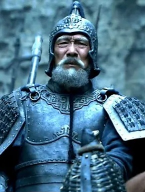
هوانگ ژونگ با نام محترم هان شنگ
کهنسالترین و یکی از باارزشترین فرماندهان شو هان که حتی در سن پیری، نیروی جوانان را به چالش میکشید. او در تیراندازی با کمان مهارتی افسانهای داشت و در نبردها با دقت و شجاعت میجنگید. وفاداریاش به لیو بی و تواناییهای رزمیاش، او را در میان پنج ببر بزرگ شو جای داد. او ثابت کرد که سن، مانعی برای افتخارآفرینی نیست.
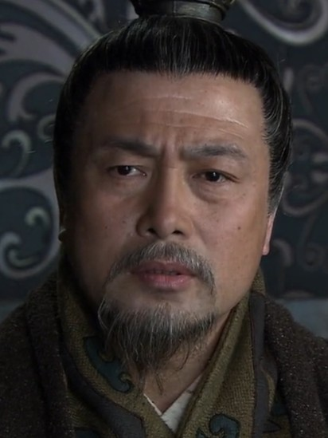
لیو ژانگ با نام محترم جی رو
فرمانروای استان ییجو که با ضعف مدیریت و بزدلی، قلمرو غنی خود را به لیو بی واگذار کرد. او در زمانهای پرآشوب، تصمیمات اشتباه و سستبنیادی گرفت که باعث شد یکیک متحدانش را از دست بدهد. اگرچه خونخواهی چندانی نداشت، ولی بیکفایتیاش، امانتی گرانبها را از او گرفت. سرنوشت او درس عبرتی است برای حاکمانی که به مشاوران خائن اعتماد میکنند.
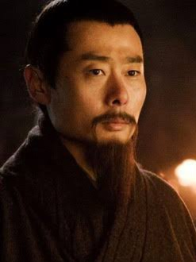
لو سو با نام محترم زی جینگ
دیپلمات و مشاور میانهروی وو که همواره به دنبال صلح و همکاری با شو هان در برابر دشمن بزرگشان، وی، بود. او با ژوگه لیانگ دوستی صمیمانهای داشت و سعی میکرد تنشها را کاهش دهد. سیاستهای متعادل و خردمندانهاش، جانبهای بسیاری را در جنگهای داخلی نجات داد. او نشان داد که گاهی گفتوگو و مدارا، کارآمدتر از شمشیر است.
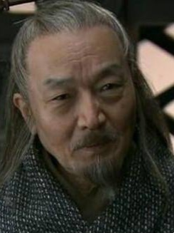
لیو بیائو با نام محترم جینگ شنگ
فرمانروای استان جینگجو که با ظاهری آرام و دوراندیش، توانست منطقهای ثروتمند را برای مدتی حفظ کند. او میزبان لیو بی بود و اورا در سختترین روزها حمایت کرد، اما در تصمیمگیری برای جانشینی، سست و مردد عمل کرد. پس از مرگش، اختلافات داخلی، استان او را به دست دشمنان سپرد. او نمونهای از حاکمانی است که با بیتصمیمی، تمام دستاوردهایشان را بر باد دادند.
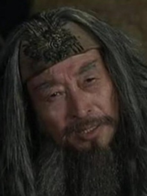
ما تنگ با نام محترم شو چنگ
فرمانروای منطقهٔ غربی لیانگجو و پدر ما چائو که با اسبسواران ماهر خود، نامی در همسایگان بر جای گذاشت. او در برابر قدرتهای بزرگ، استقلال منطقهاش را حفظ کرد و با سائو سائو به مبارزه برخاست. مرگ او به دستور سائو سائو، آتش کینهٔ ما چائو را شعلهورتر کرد. او نماد مقاومت سرزمینهای دورافتاده در برابر حکومت مرکزی بود.
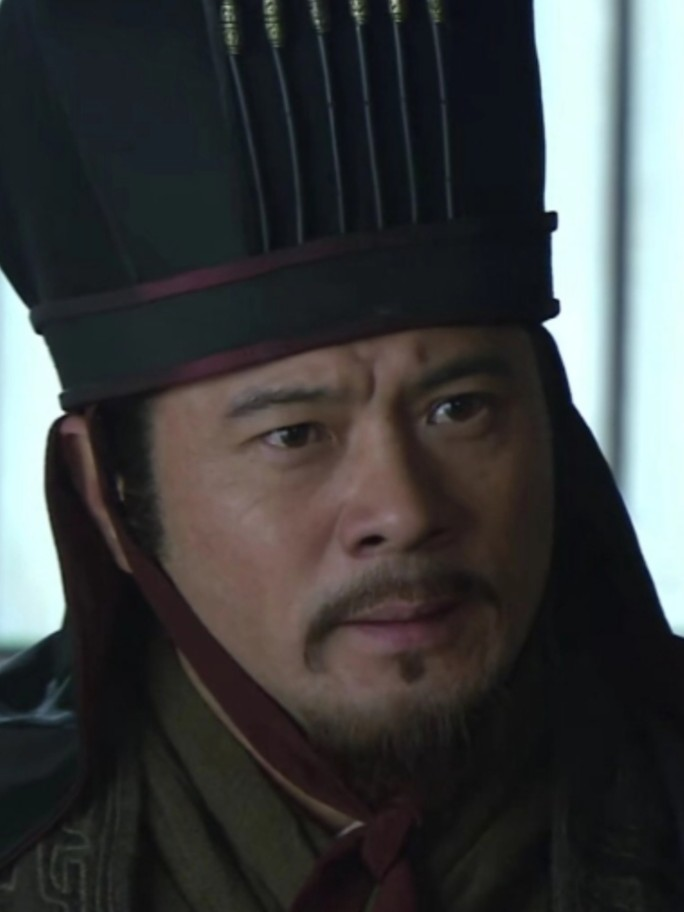
چن گونگ با نام محترم گونگ تای
مشاور وفادار و بااخلاقی که ابتدا به سائو سائو پیوست، اما پس از دیدن بیرحمیهایش، به لو بو روی آورد. او در کارهای سیاسی و نظامی، نبوغی کمنظیر داشت و همواره در پی عدالت بود. با وجود وفاداری به لو بو، حرفهایش را نادیده گرفت و سرانجام در کنار او اعدام شد. او نماد وجدان بیدار در میان سیاستمداران آن دوران است.
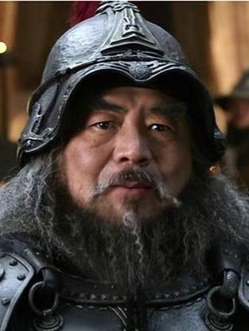
دونگ ژو با نام محترم ژونگ یینگ
قاتل مستبد و بیرحمی که با ورود به پایتخت، امپراتور را برکنار کرد و هرجومرج را در سراسر چین گسترش داد. او با ثروت و قدرت نامحدود، وحشت را بر دل مردم نشاند و با حرکاتش، جرقهٔ فروپاشی سلسلهٔ هان را زد. سرانجام به دست پسرخواندهاش لو بو، در کاخ سلطنتی به قتل رسید. او نماد ظلم و تباهی در قدرت مطلق است.
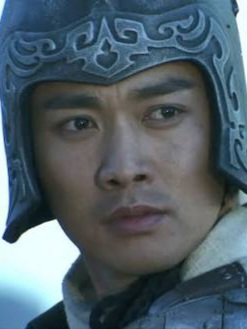
ژائو یون با نام محترم زی لونگ
جنگجوی بینظیر و وفادار شو هان که با نیزهاش، در دل دشمنان نفوذ میکرد و هرگز زخمی نشد. او در نبرد «چانگبان» جان لیو بی و فرزندش را با شجاعتی مثالزدنی نجات داد. در میان پنج ببر بزرگ شو، کمتر کسی به اندازهٔ او محبوب و خردمند بود. او نماد شوالیهای است که جنگجویی و جوانمردی را با هم جمع کرده است.
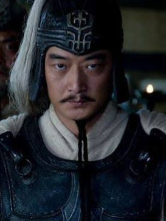
لو شون با نام محترم بویان
استراتژیست جوان وو که پس از ژو یو، پرچمدار پیروزیهای نظامی وو شد و در نبرد ییلینگ، ارتش شو را یکسره نابود کرد. او با صبر و حوصله، دشمن مغرور را به دام انداخت و با آتش، پیروزیای تاریخی رقم زد. او در سیاست و جنگاوری، فردی متین و دوراندیش بود و پس از مرگ سون کوان، همچنان ستون وو باقی ماند.
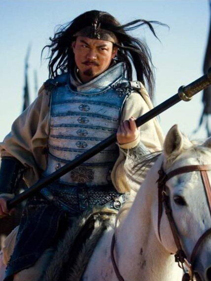
ما چائو با نام محترم منگ چی
جنگجوی غربی و از نوادگان ژنرال بزرگ ما یوان که با اسبسواری و نیزهزنی، حتی سائو سائو را به وحشت انداخت. او پس از مرگ پدرش، انتقامخونی سختگیرانه گرفت و بارها لشکر وی را زمینگیر کرد. در نهایت به شو هان پیوست و به جمع پنج ببر بزرگ شو راه یافت. سرنوشت غمانگیز و سرکشیاش، او را به چهرهای تراژیک در تاریخ تبدیل کرده است.
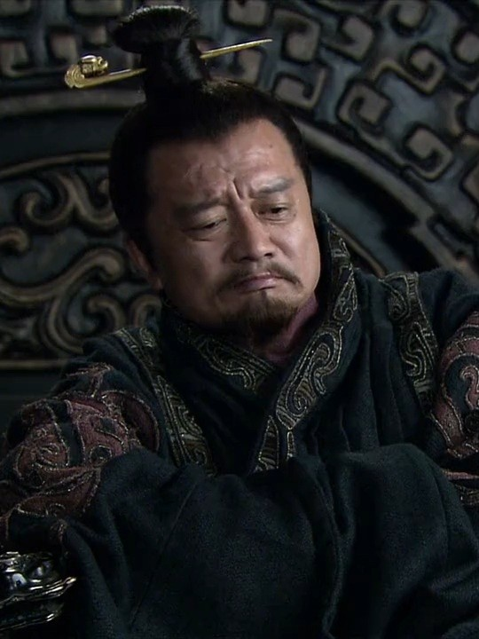
یوان شو با نام محترم گونگ لو
برادرِ ناتنی یوان شائو که با تکیه بر اصل و نسبش، به نابخردانهترین شکل ممکن خود را امپراتور خواند. او با این حرکت، حمایت همگان را از دست داد و به زودی بهکلی نابود شد. تصمیمهای عجولانه و غرور بیحدِّ او، باعث شد یکی از قدرتمندترین خاندانهای دوران به سراشیبی سقوط رود. او زندهترین مثال از خطرِ خودفریبی و جاهطلبی بیپایه است.
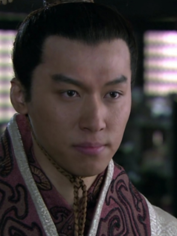
سائو روی با نام محترم یوان ژونگ
دومین امپراتور وی که علیرغم جوانی، هوشی سرشار و مدیریتی قابلتوجه از خود نشان داد. او در مدت کوتاه حکومتش، توانست با سیاستهای درست، آرامش نسبی را در وی حفظ کند و با دسیسههای سیما یی مقابله نماید. با وجود این، مرگ زودهنگامش، راه را برای تسلط خاندان سیما باز کرد. او نمونهای از پادشاهی است که کوتاه اما درخشان میدرخشد.
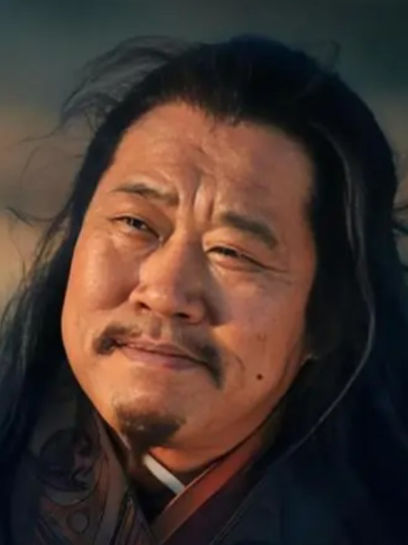
پانگ تونگ با نام محترم شی یوان
مشاور نابغهٔ شو هان که با ظاهری نابهسامان و شخصیتی تند، نبوغی همپایهٔ ژوگه لیانگ داشت. او که ملقب به «اژدهای جوان» بود، نقشهٔ ورود به استان ییجو را طراحی کرد و در آنجا جان باخت. مرگ زودهنگامش در کمین دشمن، یکی از ضایعات بزرگ شو هان بود. او هشدار میدهد که ظاهرِ فریبنده، گاه نابغهای بزرگ را پنهان میکند.
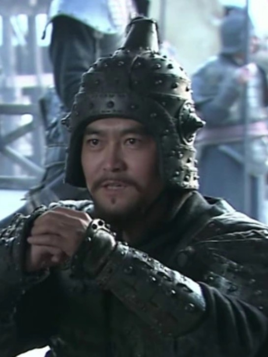
سای مائو با نام محترم ده گوئی
فرماندهٔ دریایی استان جینگجو که با حیله و فریب، نقش مهمی در سقوط لیو بیائو و تسلیم منطقه داشت. او بعداً به سائو سائو پیوست، اما در نبرد صخرهٔ سرخ، با حیلههای ژو یو و پنگ تونگ نقشههایش بر آب رفت. او نماد فرصتطلبان دورانی است که با نبود وفاداری، وطن را به باد میدهند.
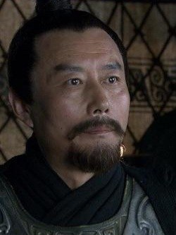
گونگسون زان با نام محترم بو گوی
فرمانروای سرسخت شمال و دشمن سرسخت یوان شائو که با اسبسواران ماهر خود، جنگهای خونینی به راه انداخت. او ابتدا متحد لیو بی بود و او را در روزهای سخت یاری کرد، اما در نهایت با یوان شائو درگیر شد و شکست خورد. خودکشیاش پس از شکست، نشان از روحیهٔ تسلیمناپذیرش داشت. او نمونهای از سردارانی است که در برابر جریان تاریخ، تنها میایستند.
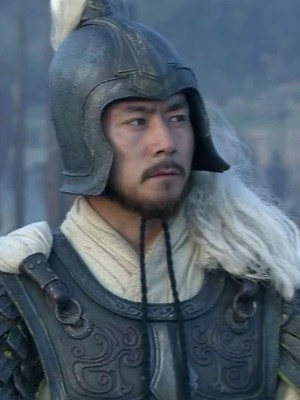
لو منگ با نام محترم زی مینگ
فرماندهٔ بزرگ وو که با فتح استان جینگجو و دستگیری گوان یو، صفحهای طلایی در تاریخ وو ثبت کرد. او که از یک سرباز عادی آغاز کرد، با تلاش و مطالعه به یکی از استراتژیستهای برجسته تبدیل شد. تصمیمهای قاطع و حیلهگرانهاش، بارها وو را از شکست نجات داد. او تجسم این اصل است که تلاش و یادگیری، میتواند هر انسانی را به اوج برساند.
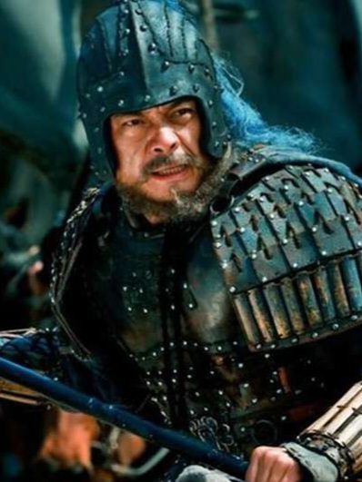
وی یان با نام محترم ون چانگ
جنگجوی دلیر و بیپروا که با شمشیر و جسارتش، نامی در سپاه شو هان پیدا کرد. او استراتژیهای جسورانهای ارائه میکرد که گاه با محافظهکاری ژوگه لیانگ در تضاد بود. پس از مرگ کونگ مینگ، شورش کرد و به دست دوستانش کشته شد. او نماد جاهطلبی و شجاعتی است که به خاطر بیصبری، به تراژدی ختم میشود.
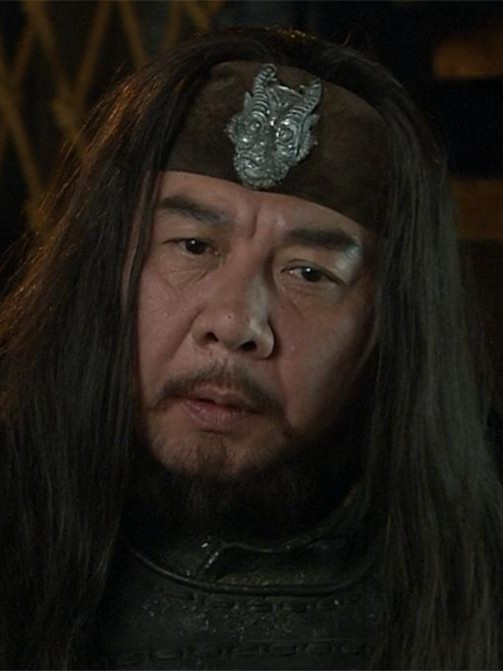
هان سویی با نام محترم ون یوئه
فرماندهٔ غرب و متحد ما تنگ که در برابر سائو سائو ایستاد، اما نهایتاً تسلیم سیاستهای حیلهگرانهٔ او شد. او با شمشیرزنی ماهر و وفاداری به متحدانش، سالها در غرب چین قدرتی مستقل داشت. اختلافات با ما چائو، باعث تضعیف جبههٔ غرب شد. او نمونهٔ متحدی است که ناهماهنگی درونگروهی، همهچیز را نابود میکند.